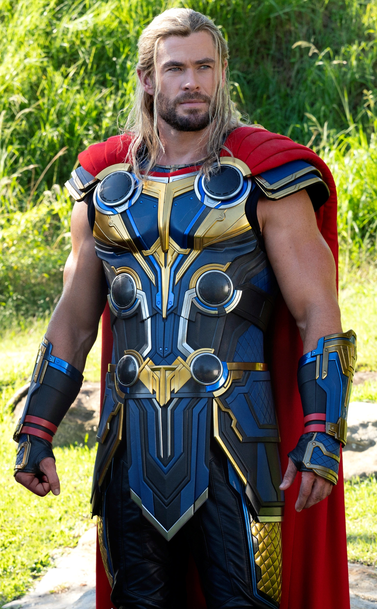
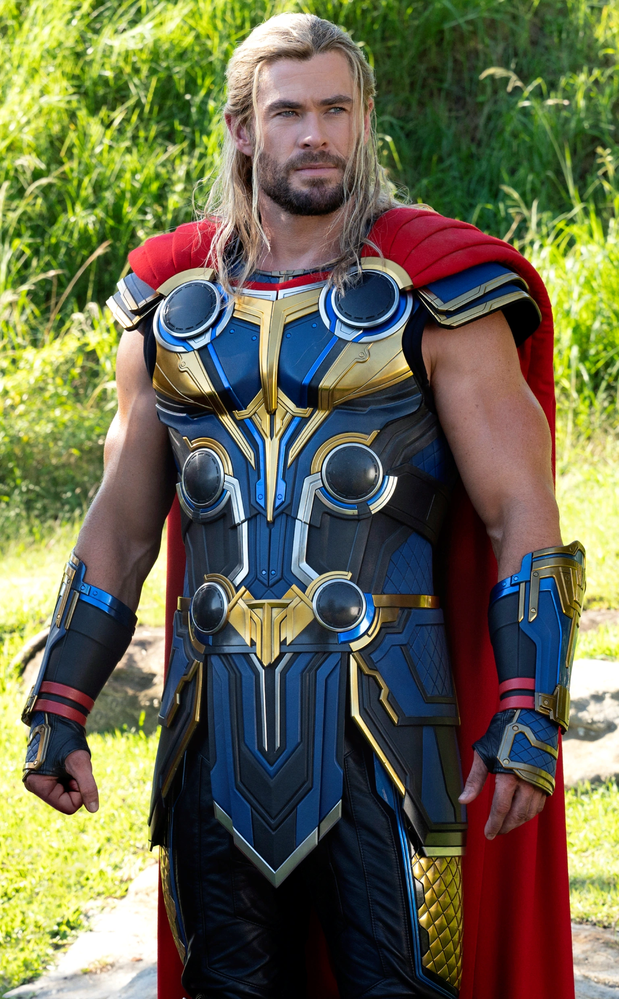

Ultimas notícias
Thor é flagrado usando o Mjolnir para abrir coco na praia
Nesse final de semana, Thor chamou a atenção de banhistas ao usar seu martelo para abrir cocos em
uma praia movimentada.
Testemunhas disseram que o herói distribuía água de coco enquanto posava para fotos com turistas.
Leia mais em:
https://www.nsctotal/noticias/thor-cocos-praia
Thor é preso apos dirigir embriagado na virada de ano
O Deus do trovão foi preso na madrugada de Ano-Novo após ser flagrado em uma blitz da Lei Seca
com sinais de embriaguez.
O veículo foi apreendido e ele poderá responder por crime de trânsito.
Leia mais em:
https://www.nsctotal/noticias/thor-preso-virada
Rumores indicam que Thor recusou participação em reality show
No dia 10 de Janeiro, fontes proximas alegam que Thor recebeu convite para participar do BBB, mas
recusou alegando que não consegue ficar longe do Mjolnir
"Já fiquei muito tempo longe dele, agora quero curtir."
Leia mais em:
https://www.nsctotal/noticias/thor-recusa-bbb
Thor lança linha de suplementos
Nesta Quarta-feira (26/02/2026), Thor em conjunto com a Growth, lança a linha "Whey do Trovão"
O produto promete forças divinas de Asgard.
Leia mais em:
https://www.fitnessbrasil.com.br/fb-news/noticias/thor-linha-suplementos

 
